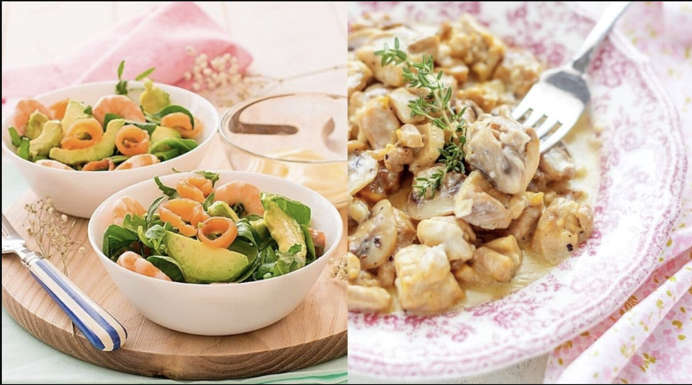

Bienvenido a Recetas Caseras, un sitio donde encontrarás platos fáciles, rápidos y deliciosos para preparar en casa.

Regístrate para guardar tus recetas favoritas y recibir nuevas ideas cada semana.